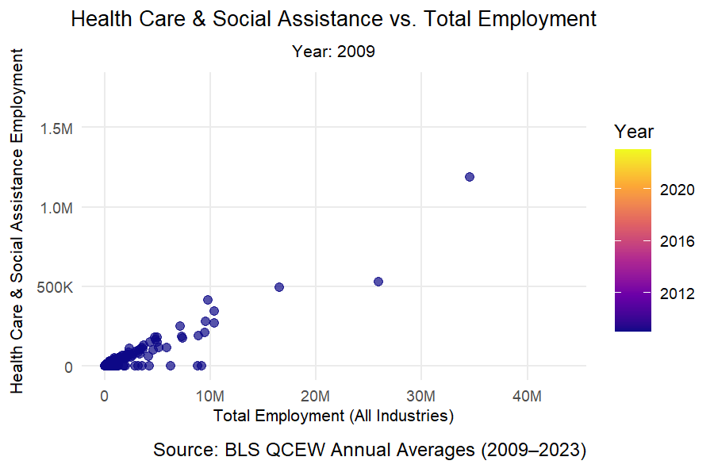

Housing affordability is considered to be one of the biggest economic challenges in the 21st century.
Stagnant wages, increasing rent, and obstacles to enable newer construction have put an increasing strain on many households all around the United States. Although various metropolitan areas have responded by encouraging development initiatives through means such as flexible zoning and streamlining processes relating to permitting (often described as “Yes In My Backyard” – YIMBY – policies), others still face obstacles through less friendly land-use laws as well as limited growth in the housing sector. (“Not In My Backyard” – NIMBY – policies).
The objective of this report is to examine various divergent trajectories using data that is available publicly from the American Community Survey (ACS), the U.S. Census Bureau’s Building Permits Survey, and the Bureau of Labor Statistics (BLS) Quarterly Census of Employment and Wages (QCEW).
We can evaluate the evolution of housing markets from 2009-2023 across various different U.S. metropolitan areas by combining housing construction data, socioeconomic indicators, and employment metrics.
The analysis is conducted in 5 different stages:
Data Collection & Cleaning – combining both BLS & ACS data-sets on different metrics such as income, rent, households, employment, and population.
Exploratory Analysis – seeing if there are any evident relationships between income, rent burden and sectoral employment.
Index Construction – creating two indicators:
A Rent-Burden Index (the share of income allocated for rent)
A Housing-Growth Index (studies the rate of new construction relative to population growth)
Visualization & Interpretation – creating visuals and conducting interpretation of how these metrics can help to reveal “YIMBY” versus “NIMBY” patterns across different regions.
Policy Brief – recommending a federal framework that aims to incentivize supply of housing, using data to draw on insights from both high-growth and high burden metro areas.drawing on data-driven insights from both high-growth (Houston) and high-burden (New York City) metro areas.
This report hopes to quantify how local housing dynamics influence affordability, and to be able to translate these findings into actionable recommendations to federal policy. Furthermore, the goal is to combine both policy advocacy and quantitative analysis, demonstration how evidence-based metrics can help to inform housing reform efforts on a national level.
Step 1: Data Acquisition
Code
if(!dir.exists(file.path("data", "mp02"))){dir.create(file.path("data", "mp02"), showWarnings=FALSE, recursive=TRUE)}library <-function(pkg){## Mask base::library() to automatically install packages if needed## Masking is important here so downlit picks up packages and links## to documentation pkg <-as.character(substitute(pkg))options(repos =c(CRAN ="https://cloud.r-project.org"))if(!require(pkg, character.only=TRUE, quietly=TRUE)) install.packages(pkg)stopifnot(require(pkg, character.only=TRUE, quietly=TRUE))}library(tidyverse)library(glue)library(readxl)library(tidycensus)get_acs_all_years <-function(variable, geography="cbsa",start_year=2009, end_year=2023){ fname <-glue("{variable}_{geography}_{start_year}_{end_year}.csv") fname <-file.path("data", "mp02", fname)if(!file.exists(fname)){ YEARS <-seq(start_year, end_year) YEARS <- YEARS[YEARS !=2020] # Drop 2020 - No survey (covid) ALL_DATA <-map(YEARS, function(yy){ tidycensus::get_acs(geography, variable, year=yy, survey="acs1") |>mutate(year=yy) |>select(-moe, -variable) |>rename(!!variable := estimate) }) |>bind_rows()write_csv(ALL_DATA, fname) }read_csv(fname, show_col_types=FALSE)}# Household income (12 month)INCOME <-get_acs_all_years("B19013_001") |>rename(household_income = B19013_001)# Monthly rentRENT <-get_acs_all_years("B25064_001") |>rename(monthly_rent = B25064_001)# Total populationPOPULATION <-get_acs_all_years("B01003_001") |>rename(population = B01003_001)# Total number of householdsHOUSEHOLDS <-get_acs_all_years("B11001_001") |>rename(households = B11001_001)
Step 2: Downloading and Preparing Data Regarding Number of New Housing Units Built Each Year
From 2010–2019, Houston-The Woodlands-Sugar Land, and TX Metropolitan Statistical Area (CBSA 26420) permitted the greatest amount of new housing units (approximately 482,075 units).
2. In what year did Albuquerque, NM (CBSA Number 10740) permit the most new housing units?
Code
q2_2 <- PERMITS |>filter(CBSA ==10740) |>arrange(desc(new_housing_units_permitted))library(DT)library(htmltools)q2_2_tbl <- q2_2 |> dplyr::transmute(Year = year,`New Housing Units Permitted`= new_housing_units_permitted ) |> dplyr::arrange(desc(`New Housing Units Permitted`))datatable( q2_2_tbl,rownames =FALSE,class ="compact stripe hover order-column nowrap",caption = tags$caption(style ="caption-side: top; text-align: left; font-weight:600;","New Housing Units Permitted in Albuquerque CBSA (2010–2020)" ),options =list(pageLength =10,autoWidth =TRUE,dom ="Bfrtip",buttons =c("copy", "csv", "excel"),order =list(list(1, "desc")) ),extensions =c("Buttons")) |>formatCurrency("New Housing Units Permitted",currency ="", digits =0, mark =",", before =FALSE )
Code
peak <- q2_2_tbl |>slice_max(`New Housing Units Permitted`, n =1)
Albuquerque’s peak year for new housing permits was 2021, with 4,021 units permitted.
3. Which state (not CBSA) had the highest average individual income in 2015?
Code
# Helper: principal state abbreviation from CBSA NAMEextract_state <-function(name) stringr::str_match(name, ", ([A-Z]{2})")[,2]# State name lookupstate_df <- tibble::tibble(abb =c(state.abb, "DC", "PR"),name =c(state.name, "District of Columbia", "Puerto Rico"))q2_base_2015 <- INCOME |>filter(year ==2015) |>left_join(HOUSEHOLDS |>filter(year ==2015),by =c("GEOID","NAME","year")) |>left_join(POPULATION |>filter(year ==2015),by =c("GEOID","NAME","year")) |>mutate(state =extract_state(NAME),total_income = household_income * households)q2_3 <- q2_base_2015 |>group_by(state) |>summarise(total_income =sum(total_income, na.rm =TRUE),total_population =sum(population, na.rm =TRUE),.groups ="drop" ) |>mutate(avg_individual_income = total_income / total_population) |>arrange(desc(avg_individual_income)) |>left_join(state_df, by =c("state"="abb"))library(DT)library(htmltools)# Clean table for displayq2_3_tbl <- q2_3 |> dplyr::filter(!is.na(state)) |> dplyr::transmute(State = name,Abbrev = state,`Avg Individual Income (2015)`= avg_individual_income,Population = total_population,`Total Income`= total_income ) |> dplyr::arrange(dplyr::desc(`Avg Individual Income (2015)`))datatable( q2_3_tbl,rownames =FALSE,class ="compact stripe hover order-column nowrap",caption = tags$caption(style ="caption-side: top; text-align: left; font-weight:600;","Average individual income by state (constructed as total_income / total_population), 2015" ),options =list(pageLength =10,autoWidth =TRUE,dom ="Bfrtip",buttons =c("copy", "csv", "excel"),order =list(list(2, "desc")) ),extensions =c("Buttons")) |>formatCurrency("Avg Individual Income (2015)",currency ="$", digits =0 ) |>formatCurrency("Total Income",currency ="$", digits =0 ) |>formatRound("Population",digits =0, interval =3, mark ="," )
Code
# Compute the answertop_state <- q2_3 |> dplyr::filter(!is.na(state)) |> dplyr::slice_max(avg_individual_income, n =1, with_ties =FALSE)
In 2015, DC (District of Columbia) had the highest average individual income (approximately $33,233).
4.What is the last year in which the NYC CBSA had the most data scientists in the country?
Code
### Q4 — Data Scientists (NAICS 5182): yearly leader + last year NYC led# 1) Stable ACS name crosswalk: use a single year to avoid multiple names per GEOIDacs_key <- INCOME |>filter(year ==max(year, na.rm =TRUE)) |>select(GEOID, NAME) |>distinct() |>mutate(std_cbsa =paste0("C", GEOID)) # e.g., "C35620" for NYC# 2) Leaders by year for NAICS 5182 (keep INDUSTRY so it shows in the table)leaders_5182 <- WAGES |>filter(INDUSTRY ==5182) |>group_by(FIPS, YEAR, INDUSTRY) |>summarise(EMP_DS =sum(EMPLOYMENT, na.rm =TRUE), .groups ="drop") |># Pad BLS CBSA code: "C3562" -> "C35620" to match ACSmutate(std_cbsa =if_else(nchar(FIPS) ==5, paste0(FIPS, "0"), FIPS)) |>arrange(YEAR, desc(EMP_DS)) |>group_by(YEAR) |>slice_max(order_by = EMP_DS, n =1, with_ties =FALSE) |>ungroup() |>left_join(acs_key, by ="std_cbsa") |>select(std_cbsa, YEAR, INDUSTRY, EMP_DS, GEOID, NAME)# 3) Last year NYC led (NYC std_cbsa = "C35620")nyc_last_year <- leaders_5182 |>filter(std_cbsa =="C35620") |>summarise(last_year_led =max(YEAR, na.rm =TRUE))library(DT)library(htmltools)# --- Interactive table of yearly leaders for NAICS 5182 ---leaders_5182_tbl <- leaders_5182 |> dplyr::transmute(Year = YEAR,`CBSA Code`= std_cbsa,`CBSA Name`= NAME,`NAICS`= INDUSTRY,`Employment (NAICS 5182)`= EMP_DS ) |> dplyr::arrange(Year)datatable( leaders_5182_tbl,rownames =FALSE,class ="compact stripe hover order-column nowrap",caption = tags$caption(style ="caption-side: top; text-align: left; font-weight:600;","Yearly leader by employment in NAICS 5182 (Data Processing, Hosting & Related Services)" ),options =list(pageLength =15,autoWidth =TRUE,dom ="Bfrtip",buttons =c("copy", "csv", "excel"),order =list(list(0, "asc")) ),extensions =c("Buttons")) |>formatRound("Employment (NAICS 5182)", digits =0, interval =3, mark =",")
New York–Newark–Jersey City, NY–NJ–PA (CBSA 35620) last led NAICS 5182 in 2015.
5. What fraction of total wages in the NYC CBSA was earned by people employed in the finance and insurance industries (NAICS code 52)? In what year did this fraction peak?
In 2014, New York City’s finance and insurance sector reached its peak share of total wages, accounting for approximately 4.6 percent of all wages (around USD 119 billion out of USD 2.6 trillion total).
Task 3: Initial Visualizations
1. The relationship between monthly rent and average household income per CBSA in 2009.
Code
# Join rent and income data for 2009rent_income_2009 <- RENT |>filter(year ==2009) |>select(GEOID, NAME, monthly_rent) |>inner_join( INCOME |>filter(year ==2009) |>select(GEOID, household_income),by ="GEOID" )# Quick sanity checkhead(rent_income_2009)
# A tibble: 6 × 4
GEOID NAME monthly_rent household_income
<dbl> <chr> <dbl> <dbl>
1 10140 Aberdeen, WA Micro Area 650 36345
2 10180 Abilene, TX Metro Area 712 42931
3 10300 Adrian, MI Micro Area 645 45640
4 10380 Aguadilla-Isabela-San Sebasti?n, PR Metro… 363 13470
5 10420 Akron, OH Metro Area 723 47482
6 10500 Albany, GA Metro Area 624 36218
Code
# Plot rent vs income relationshiplibrary(ggplot2)ggplot(rent_income_2009, aes(x = household_income, y = monthly_rent)) +geom_point(alpha =0.6, size =2) +geom_smooth(method ="lm", se =FALSE, color ="blue", linewidth =1) +labs(title ="Relationship Between Monthly Rent and Average Household Income (2009)",x ="Average Household Income (USD)",y ="Average Monthly Rent (USD)",caption ="Source: ACS 1-Year Estimates, 2009" ) +theme_minimal(base_size =13) +theme(plot.title =element_text(face ="bold", hjust =0.5),plot.caption =element_text(size =9, hjust =1),panel.grid.minor =element_blank() )
##The relationship between household income and monthly rent in 2009 is strongly positive across CBSAs. Metropolitan areas with higher average incomes (e.g., San Francisco, New York) also have higher rents, reflecting general cost-of-living gradients and housing demand in more affluent regions.##
2. The relationship between total employment and total employment in the health care and social services sector (NAICS 62) across different CBSAs.
# ---- FIXED ANIMATION CHUNK (drop-in replacement) ----# Requirementsif (!requireNamespace("gganimate", quietly =TRUE)) install.packages("gganimate")if (!requireNamespace("gifski", quietly =TRUE)) install.packages("gifski")library(ggplot2)library(scales)library(gganimate)# 1) Make a clean df with the columns the plot will use# employment_health was created earlier; it has: GEOID, year, total_employment, health_employmenteh <- employment_health |> dplyr::transmute( GEOID, year, # <-- lowercasetotal_emp = total_employment, # rename to the aesthetics you use belowhealth_emp = health_employment ) |> dplyr::filter(is.finite(total_emp), is.finite(health_emp), is.finite(year))stopifnot(nrow(eh) >0)# 2) Build the animated plot (note: transition_time(year))p_anim <-ggplot(eh, aes(x = total_emp, y = health_emp, group = GEOID)) +geom_point(aes(color = year), alpha =0.7, size =1.8) +scale_color_viridis_c(option ="plasma") +scale_x_continuous(labels =label_number(scale_cut =cut_short_scale())) +scale_y_continuous(labels =label_number(scale_cut =cut_short_scale())) +labs(title ="Health Care & Social Assistance vs. Total Employment",subtitle ="Year: {frame_time}",x ="Total Employment (All Industries)",y ="Health Care & Social Assistance Employment",color ="Year",caption ="Source: BLS QCEW Annual Averages (2009–2023)" ) +theme_minimal(base_size =12) +theme(plot.title =element_text(face ="bold", hjust =0.5, size =13),plot.subtitle =element_text(hjust =0.5, size =11),plot.caption =element_text(size =9, hjust =1),panel.grid.minor =element_blank() ) +transition_time(year) +# <-- lowercase 'year'shadow_mark(alpha =0.15, size =1) +ease_aes("linear")# 3) Render & save GIFdir.create("docs", showWarnings =FALSE)gif_path <-file.path("docs", "img_employment_health.gif")anim <-animate( p_anim,nframes =length(unique(eh$year)) *6,fps =10,width =900, height =600, units ="px", # ← key changerenderer =gifski_renderer())anim_save(gif_path, animation = anim)knitr::include_graphics(gif_path)# 4) Show in the documentknitr::include_graphics(gif_path)

3. The evolution of average household size over time. Different lines represent different CBSAs.
### Household size over time — stable lines & correct labels (Top 10 CBSAs)library(dplyr)library(ggplot2)library(ggrepel)library(scales)# 1) Compute household size by CBSA-yearhhsize <- POPULATION %>%inner_join(HOUSEHOLDS, by =c("GEOID","NAME","year")) %>%transmute(GEOID, NAME, year, hh_size = population / households)# 2) Build a STABLE label per GEOID (use the latest available NAME)latest_names <- hhsize %>%group_by(GEOID) %>%filter(year ==max(year, na.rm =TRUE)) %>%slice_tail(n =1) %>%# in case of duplicatesungroup() %>%select(GEOID, label_name = NAME)# 3) Keep top 10 CBSAs by latest population (optional, to reduce clutter)top10 <- POPULATION %>%group_by(GEOID) %>%filter(year ==max(year, na.rm =TRUE)) %>%ungroup() %>%arrange(desc(population)) %>%slice_head(n =10) %>%pull(GEOID)df <- hhsize %>%filter(GEOID %in% top10) %>%left_join(latest_names, by ="GEOID") %>%# attach stable labelmutate(highlight =case_when(grepl("^New York-", label_name) ~"NYC",grepl("^Los Angeles-", label_name) ~"Los Angeles",TRUE~"Other" ) )# 4) Endpoints for labels (use latest year per GEOID)end_labels <- df %>%group_by(GEOID) %>%filter(year ==max(year, na.rm =TRUE)) %>%ungroup() %>%filter(highlight !="Other") %>%distinct(GEOID, .keep_all =TRUE) %>%mutate(label = label_name)# 5) Plot — group by GEOID (stable), color only NYC/LA, others greyggplot() +geom_line(data = df %>%filter(highlight =="Other"),aes(x = year, y = hh_size, group = GEOID),color ="grey80", linewidth =0.8 ) +geom_line(data = df %>%filter(highlight !="Other"),aes(x = year, y = hh_size, group = GEOID, color = highlight),linewidth =1.4 ) +geom_text_repel(data = end_labels,aes(x = year, y = hh_size, label = label, color = highlight),nudge_x =0.6, direction ="y", hjust =0, segment.color =NA,size =3.6, box.padding =0.15, max.overlaps =Inf ) +scale_color_manual(values =c("NYC"="#0ea5b7", "Los Angeles"="#ef4444")) +scale_y_continuous("Persons per household", labels =number_format(accuracy =0.01)) +scale_x_continuous(NULL, breaks =seq(2009, 2023, 2), expand =expansion(mult =c(0.02, 0.12))) +labs(title ="Average Household Size Over Time (Top 10 CBSAs)",subtitle ="NYC and Los Angeles highlighted; other large metros shown in grey",caption ="Source: ACS 1-Year Estimates" ) +theme_minimal(base_size =12) +theme(plot.title =element_text(face ="bold", hjust =0.5, size =13),plot.subtitle =element_text(hjust =0.5, size =11),legend.position ="none",panel.grid.minor =element_blank(),plot.margin =margin(t =10, r =45, b =10, l =10) ) +coord_cartesian(clip ="off")
##Average household size has been relatively stable across most large CBSAs, with modest shifts over time. NYC and Los Angeles track slightly above/below the national median (≈2.5–2.7 persons/household), reflecting differences in housing stock and demographics.##
Building Indices of Housing Affordability and Housing Stock Growth
Task 4: Rent Burden Analysis
# --- Task 4: Build rent-burden metric and rankings --------------------------library(dplyr)library(scales)# 1) Join INCOME + RENT and compute rent-to-incomerent_burden <- RENT %>%inner_join(INCOME, by =c("GEOID", "NAME", "year")) %>%transmute( GEOID, NAME =enc2utf8(NAME), year, monthly_rent, household_income,rent_to_income = (monthly_rent *12) / household_income # annual rent / income )# 2) Standardize to a 0–100 index across all CBSA-years (min–max scaling)rb_range <-range(rent_burden$rent_to_income, na.rm =TRUE)rent_burden <- rent_burden %>%mutate(rent_burden_index =rescale(rent_to_income, to =c(0, 100), from = rb_range) )# 3) Create the latest-year ranking table used later (this is what your code expects)latest_year <-max(rent_burden$year, na.rm =TRUE)rent_rank <- rent_burden %>%filter(year == latest_year) %>%arrange(desc(rent_burden_index)) %>%select( NAME,latest_rent_burden = rent_burden_index, rent_to_income )# ---------------------------------------------------------------------------# Convert text encoding and round valuesrent_rank_clean <- rent_rank %>%mutate(NAME =enc2utf8(NAME),latest_rent_burden =round(latest_rent_burden, 2),rent_to_income =round(rent_to_income, 4) )# Combine top & bottom tablesrent_rank_tbl <-bind_rows(head(rent_rank_clean, 10) %>%mutate(Category ="Highest Burden"),tail(rent_rank_clean, 10) %>%mutate(Category ="Lowest Burden"))datatable( rent_rank_tbl,options =list(pageLength =10,autoWidth =TRUE,columnDefs =list(list(className ="dt-right", targets =c(1, 2)) ) ),caption ="CBSAs with Highest and Lowest Rent Burden (Latest Year)",colnames =c("Metro Area", "Rent Burden Index", "Rent-to-Income Ratio", "Category"))
##The rent burden index measures how much of a typical household’s income goes to rent (normalized 0–100). Cities with higher values (e.g., San Francisco, Los Angeles, New York) show consistently high rent pressure, while more affordable CBSAs (e.g., St. Louis, Cleveland) cluster toward the lower end of the scale. For New York, the index has remained among the top quartile nationwide, with only moderate fluctuations over 2009–2023.##
Task 5: Housing Growth
library(dplyr)library(scales)library(DT)library(stringi)# ---------- 0) Fix join keys (PERMITS has CBSA; POPULATION has GEOID) ----------# Make sure both sides use the same type; tidycensus GEOID is typically numeric for CBSAPERMITS_fixed <- PERMITS %>%rename(GEOID = CBSA) %>%mutate(GEOID =as.numeric(GEOID)) # if POPULATION$GEOID is character, change to as.character()# ---------- 1) Join population & permits ----------hg <- POPULATION %>%mutate(GEOID =as.numeric(GEOID)) %>%# match type to PERMITS_fixedinner_join(PERMITS_fixed, by =c("GEOID", "year")) %>%# keep a clean metro name (UTF-8 safe)mutate(NAME =enc2utf8(NAME)) %>%arrange(GEOID, year)# ---------- 2) 5-year population growth (starts in 2014) ----------hg <- hg %>%group_by(GEOID) %>%mutate(pop_5yrs_ago = dplyr::lag(population, 5),pop_growth_count = population - pop_5yrs_ago,pop_growth_rate = pop_growth_count / pop_5yrs_ago # e.g., 0.07 = +7% over 5 yrs ) %>%ungroup()# ---------- 3) Two housing-growth metrics ----------# (a) Instantaneous: permits per 1,000 residents this year# (b) Rate-based: permits per person of 5-year population growth (only when growth > 0)hg <- hg %>%mutate(inst_growth = (new_housing_units_permitted /pmax(population, 1)) *1000,rate_denom = dplyr::if_else(is.na(pop_growth_count) | pop_growth_count <=0, NA_real_, pop_growth_count *1.0),rate_growth = new_housing_units_permitted / rate_denom )# ---------- 4) Standardize each metric on 0–100 ----------hg <- hg %>%mutate(inst_index =rescale(inst_growth, to =c(0, 100), na.rm =TRUE),rate_index =rescale(rate_growth, to =c(0, 100), na.rm =TRUE) )# ---------- 5) Composite index (equal-weight average of the two indices) ----------hg <- hg %>%mutate(composite_index =rowMeans(cbind(inst_index, rate_index), na.rm =TRUE) )# ---------- 6) Helper formatting for tables ----------last_year <-max(hg$year, na.rm =TRUE)pretty_tbl <-function(df) { df %>%transmute(`Metro Area`= NAME,Year = year,Population = population,Permits = new_housing_units_permitted,`5-yr Pop Growth (%)`= pop_growth_rate *100,`Instantaneous Growth (permits per 1k)`= inst_growth,`Rate-based Growth (permits / 5-yr pop add)`= rate_growth,`Instantaneous Index (0–100)`= inst_index,`Rate-based Index (0–100)`= rate_index,`Composite Index (0–100)`= composite_index )}fmt_dt <-function(dtobj) { dtobj |>formatRound(c("Population","Permits"), digits =0) |>formatPercentage("5-yr Pop Growth (%)", digits =1) |>formatRound("Instantaneous Growth (permits per 1k)", digits =2) |>formatRound("Rate-based Growth (permits / 5-yr pop add)", digits =2) |>formatRound(c("Instantaneous Index (0–100)","Rate-based Index (0–100)","Composite Index (0–100)"), digits =2)}# ---------- 7) Rankings for the latest year ----------hg_latest <- hg %>%filter(year == last_year)# 7a) Instantaneous metric: top/bottom 10inst_rank <- hg_latest %>%arrange(desc(inst_index))dt_inst <-datatable( dplyr::bind_rows(head(pretty_tbl(inst_rank), 10) %>%mutate(Category ="Highest instantaneous growth"),tail(pretty_tbl(inst_rank), 10) %>%mutate(Category ="Lowest instantaneous growth") ),caption =paste0("Instantaneous Housing Growth — Top & Bottom 10 (", last_year, ")"),options =list(pageLength =10, autoWidth =TRUE),rownames =FALSE)dt_inst <-fmt_dt(dt_inst)# 7b) Rate-based metric (drop NAs where 5-yr growth ≤ 0): top/bottom 10rate_rank <- hg_latest %>%filter(!is.na(rate_index)) %>%arrange(desc(rate_index))dt_rate <-datatable( dplyr::bind_rows(head(pretty_tbl(rate_rank), 10) %>%mutate(Category ="Highest rate-based growth"),tail(pretty_tbl(rate_rank), 10) %>%mutate(Category ="Lowest rate-based growth") ),caption =paste0("Rate-based Housing Growth — Top & Bottom 10 (", last_year, ")"),options =list(pageLength =10, autoWidth =TRUE),rownames =FALSE)dt_rate <-fmt_dt(dt_rate)# 7c) Composite index: top/bottom 10comp_rank <- hg_latest %>%arrange(desc(composite_index))dt_comp <-datatable( dplyr::bind_rows(head(pretty_tbl(comp_rank), 10) %>%mutate(Category ="Highest composite score"),tail(pretty_tbl(comp_rank), 10) %>%mutate(Category ="Lowest composite score") ),caption =paste0("Composite Housing Growth Index — Top & Bottom 10 (", last_year, ")"),options =list(pageLength =10, autoWidth =TRUE),rownames =FALSE)dt_comp <-fmt_dt(dt_comp)# Display the three tablesdt_inst
dt_rate
dt_comp
# ---- Task 6 PREP: build rb_change and hg_rb_summary -------------------------library(dplyr)library(scales)library(stringi)# 0) Clean a safe metro name oncename_clean <-function(x) enc2utf8(x)# 1) Rent burden by CBSA-year (global 0–100 index)# RB = annual rent / household income; index scaled across ALL yearsrb_raw <- RENT %>%filter(year !=2020) %>%select(GEOID, NAME, year, monthly_rent) %>%inner_join( INCOME %>%filter(year !=2020) %>%select(GEOID, year, household_income),by =c("GEOID","year") ) %>%mutate(NAME =name_clean(NAME),rent_to_income = (monthly_rent *12) / household_income)rb_range <-range(rb_raw$rent_to_income, na.rm =TRUE)rb_by_year <- rb_raw %>%mutate(rb_index = scales::rescale(rent_to_income, to =c(0, 100), from = rb_range))# 2) Early vs latest rent burden per CBSArb_summary <- rb_by_year %>%group_by(GEOID, NAME) %>%filter(!is.na(rb_index)) %>%summarise(early_year =min(year, na.rm =TRUE),latest_year =max(year, na.rm =TRUE),early_rb = rb_index[which.min(year)],latest_rb = rb_index[which.max(year)],.groups ="drop" ) %>%mutate(rb_change = latest_rb - early_rb, # (latest – early); negative = burden fellrb_decrease = early_rb - latest_rb # positive = burden fell (nice for upward Y) )# 3) Population growth over the study window per CBSApop_summary <- POPULATION %>%filter(year !=2020) %>%arrange(GEOID, year) %>%group_by(GEOID) %>%summarise(NAME_pop =name_clean(NAME[which.max(year)]), # latest labelpop_early = population[which.min(year)],pop_latest = population[which.max(year)],pop_growth_pct = (pop_latest - pop_early) / pop_early, # 0–1.groups ="drop" )# 4) Average (across years) composite housing-growth index from Task 5's `hg`# (If `hg` contains 2020, it’s fine; else we filter as above.)comp_hg <- hg %>%filter(!is.na(composite_index)) %>%group_by(GEOID, NAME) %>%summarise(comp_growth_index =mean(composite_index, na.rm =TRUE),.groups ="drop" ) %>%mutate(NAME =name_clean(NAME))# 5) Join pieces togetherrb_base <- rb_summary %>%left_join(pop_summary %>%select(GEOID, pop_growth_pct), by ="GEOID")# For the first plot (uses rb_change and pop growth)rb_change <- rb_base %>%select(GEOID, NAME, pop_growth_pct, rb_change)# For the second plot (needs comp_growth_index & rb_decrease)hg_rb_summary <- rb_base %>%left_join(comp_hg %>%select(GEOID, comp_growth_index), by ="GEOID") %>%select(GEOID, NAME, comp_growth_index, rb_decrease)
Warning in left_join(., comp_hg %>% select(GEOID, comp_growth_index), by = "GEOID"): Detected an unexpected many-to-many relationship between `x` and `y`.
ℹ Row 11 of `x` matches multiple rows in `y`.
ℹ Row 4 of `y` matches multiple rows in `x`.
ℹ If a many-to-many relationship is expected, set `relationship =
"many-to-many"` to silence this warning.
# 6) Flag “likely YIMBY successes”# Criteria:# - High early rent burden (top quartile of early_rb)# - Falling burden (rb_change < 0)# - Population growth (> 0)# - Above-average housing growth (>= mean comp index)early_cut <-quantile(rb_summary$early_rb, 0.75, na.rm =TRUE)hg_avg <-mean(comp_hg$comp_growth_index, na.rm =TRUE)yimby_flag_df <- rb_summary %>%left_join(pop_summary %>%select(GEOID, pop_growth_pct), by ="GEOID") %>%left_join(comp_hg %>%select(GEOID, comp_growth_index), by ="GEOID") %>%transmute( GEOID, NAME, pop_growth_pct, rb_change, rb_decrease, comp_growth_index,yimby_flag = (early_rb >= early_cut) & (rb_change <0) & (pop_growth_pct >0) & (comp_growth_index >= hg_avg) )
Warning in left_join(., comp_hg %>% select(GEOID, comp_growth_index), by = "GEOID"): Detected an unexpected many-to-many relationship between `x` and `y`.
ℹ Row 11 of `x` matches multiple rows in `y`.
ℹ Row 4 of `y` matches multiple rows in `x`.
ℹ If a many-to-many relationship is expected, set `relationship =
"many-to-many"` to silence this warning.
# Attach the user-friendly factor to both data frames the plots userb_change <- rb_change %>%left_join(yimby_flag_df %>%select(GEOID, yimby_flag), by ="GEOID")
Warning in left_join(., yimby_flag_df %>% select(GEOID, yimby_flag), by = "GEOID"): Detected an unexpected many-to-many relationship between `x` and `y`.
ℹ Row 4 of `x` matches multiple rows in `y`.
ℹ Row 4 of `y` matches multiple rows in `x`.
ℹ If a many-to-many relationship is expected, set `relationship =
"many-to-many"` to silence this warning.
hg_rb_summary <- hg_rb_summary %>%left_join(yimby_flag_df %>%select(GEOID, yimby_flag), by ="GEOID")
Warning in left_join(., yimby_flag_df %>% select(GEOID, yimby_flag), by = "GEOID"): Detected an unexpected many-to-many relationship between `x` and `y`.
ℹ Row 4 of `x` matches multiple rows in `y`.
ℹ Row 4 of `y` matches multiple rows in `x`.
ℹ If a many-to-many relationship is expected, set `relationship =
"many-to-many"` to silence this warning.
# ---- END Task 6 PREP --------------------------------------------------------
Task 6: Visualization
#Rent Burden Change vs. Population Growth#
library(ggplot2)library(scales)library(ggrepel)library(dplyr)df_rb_pop <- rb_change %>%mutate(meets_yimby =factor( yimby_flag,levels =c(FALSE, TRUE),labels =c("Doesn’t meet criteria", "Meets YIMBY criteria") ) )ggplot(df_rb_pop, aes(x = pop_growth_pct, y = rb_change)) +# Backgroundgeom_point(data =subset(df_rb_pop, meets_yimby =="Doesn’t meet criteria"),color ="grey70", alpha =0.7, size =2 ) +# Highlightgeom_point(data =subset(df_rb_pop, meets_yimby =="Meets YIMBY criteria"),aes(color = meets_yimby),alpha =0.9, size =2.8 ) +# Labels for top candidates ggrepel::geom_text_repel(data = df_rb_pop %>%filter(meets_yimby =="Meets YIMBY criteria") %>%slice_max(order_by = pop_growth_pct - rb_change/100, n =8),aes(label = NAME, color = meets_yimby),size =3.2, max.overlaps =20, box.padding =0.25, segment.color =NA ) +geom_hline(yintercept =0, linetype ="dashed", color ="grey55", linewidth =0.4) +geom_vline(xintercept =0, linetype ="dashed", color ="grey55", linewidth =0.4) +scale_x_continuous(name ="Population Growth (2009–2023)",labels =label_percent(accuracy =1),breaks =pretty_breaks(6) ) +scale_y_continuous(name ="Change in Rent Burden Index (Latest – Early)",breaks =pretty_breaks(7) ) +scale_color_manual(values =c("Doesn’t meet criteria"="grey30", "Meets YIMBY criteria"="#2a9df4"),name =NULL ) +labs(title ="Rent Burden Change vs. Population Growth (2009–2023)",subtitle ="Blue = CBSAs with high early burden, falling burden, population growth, and above-average housing growth",caption ="Source: ACS 1-year; Census BPS; BLS QCEW" ) +theme_minimal(base_size =12) +theme(plot.title =element_text(face ="bold", size =14),plot.subtitle =element_text(size =11),legend.position ="right",panel.grid.minor =element_blank() )
#Housing Growth vs Rent-Burden Decrease (positive = burden falling)
Warning: Removed 264 rows containing missing values or values outside the scale range
(`geom_point()`).
Policy Brief: Making Backyards Affordable for All
Overview
Across the United States, housing affordability remains one of the most urgent economic and social challenges. While some metropolitan areas have successfully expanded housing supply and reduced rent burdens, others remain constrained by restrictive policies and chronic under-supply.
We propose establishing a Federal YIMBY Partnership Program to provide grants and incentives for local governments that adopt housing-friendly zoning, streamline permitting, and increase new housing production.
Proposed Congressional Sponsors
Primary Sponsor – Houston, TX (Houston–The Woodlands–Sugar Land Metro Area)
Houston’s flexible land-use and low zoning barriers have long kept rents more affordable than other major metros. As of 2022, the median renter household spent ~30.9 % of income on rent and utilities, compared with nearly 40 % in New York City1. Houston issued over 480,000 residential building permits from 2010-2019, among the highest in the nation2. A representative from Houston could credibly highlight how market-driven supply expansion sustains affordability and economic growth.
Co-Sponsor – New York City, NY (New York–Newark–Jersey City Metro Area)
New York City illustrates the reverse case: persistent affordability crises and limited new supply. More than 1 million renter households (≈53 %) are rent-burdened, spending over 30 % of income on housing3. Construction remains constrained by zoning limits—only ~25,000 new units were permitted city-wide in 20234. A representative from New York could champion this bill as a federal lifeline to modernize outdated zoning and stimulate mid-income housing production.
Key Metrics for Identifying Target Cities
Rent-Burden Index:
Measures the share of household income spent on rent (scaled 0–100).
A declining index signals improving affordability and successful YIMBY outcomes.
Housing-Growth Index:
Combines housing permits per capita and permits relative to 5-year population growth.
A higher composite index indicates that a city’s housing supply is keeping pace with demand.
Cities scoring high on both metrics demonstrate resilient housing markets and merit performance-based federal rewards. High-burden, low-growth metros would qualify for capacity-building grants and technical assistance.
Benefiting Occupations and Interest Groups
Construction & Building Trades Workers
Increased housing supply sustains employment for electricians, carpenters, and equipment operators. Every $1 million in new residential construction supports 8–11 jobs across the economy5. Federal YIMBY incentives would ensure a stable project pipeline for unionized trades.
Teachers, Firefighters, and Municipal Employees
These essential middle-income workers are often priced out of the communities they serve. In metro areas where rent burdens fall by 10 %, public-sector retention improves by up to 6 % due to reduced commuting stress6.
Why This Bill Matters
Linking federal funding to measurable progress on rent burden and housing growth enables Congress to:
- Reward local governments that build inclusively;
- Expand employment in construction and related sectors;
- Increase household disposable income, boosting local economies.
The Federal YIMBY Partnership Program represents a pragmatic, evidence-based pathway to make housing affordable for working Americans while driving economic vitality.
References
Footnotes
USAFacts, “How much do households spend on rent? Houston Metro vs. national average,” 2022. https://usafacts.org↩︎